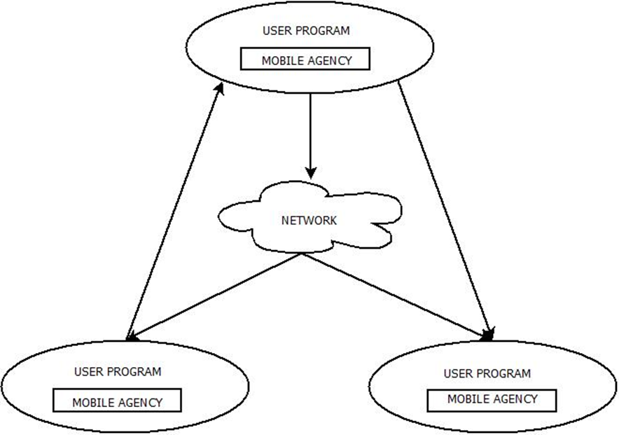

Mobile computing unit 3
Logical Mobility¶
Logical Mobility refers to the ability to transfer software components, code, or computational elements between different systems or devices.
Types of Logical Mobility¶
- Software Programs & Applications: Moving entire applications between devices.
- Code Segments & Modules: Transferring scripts or functions dynamically.
- Objects & Data Structures: Migrating serialized objects or database entries.
- Computational Processes: Shifting active processing tasks to another system.
Examples¶
- App Downloads: Installing an application from an app store.
- Web Execution: A browser fetching and executing JavaScript from a server.
Process Migration¶

Process Migration is the transfer of an executing process from one computing system to another while maintaining its state.
Key Aspects of Process Migration¶
- Process = Program Under Execution
- State Transfer Includes:
- Address Space: Memory and allocated resources.
- Execution Point: CPU register contents.
- Communication State: Open files, message channels.
- OS-dependent States: Any system-specific data.
Migration Process¶
- Two Instances Exist: A source and destination process.
- Final Handoff: The destination instance takes over as the migrated process.
- Remote Execution: A process running on another machine is called a remote process.
Example¶
- Watching a movie on a smart TV, then continuing playback on a tablet while traveling.
Process Migration Steps¶
Step 1: Migration Request Issued¶
- A migration request is sent to a remote node.
- After negotiation, the migration is accepted.
Diagram¶

Step 2: Process Detachment¶
- The process is suspended on the source node.
- It is marked as "migrating."
- Communication is temporarily redirected.
Diagram¶

Step 3: Temporary Communication Redirection¶
- Incoming messages are queued.
- Messages are delivered after migration.
Diagram¶

Step 4: Process State Extraction¶
- The process's memory, registers, communication state, and kernel context are extracted.
Diagram¶
Step 5: Destination Process Instance Created¶
- A new process instance is initialized on the remote node.
Diagram¶

Step 6: State Transfer¶
- The extracted state is transferred to the destination node.
Diagram¶

Step 7: Forwarding References¶
- References (e.g., file descriptors, network sockets) are updated to point to the new process instance.
Diagram¶

Step 8: Process Resumed¶
- The new process instance resumes execution on the remote node.
Diagram¶

Advantages of Process Migration¶
- Dynamic Load Distribution
- Balances the load by migrating processes from overloaded nodes to less loaded ones.
- Fault Resilience
- Ensures continuity by migrating processes from nodes that have partially failed or are at risk of failure.
- Improved System Administration
- Facilitates maintenance by moving processes from nodes that are about to be shut down or become unavailable.
- Data Access Locality
- Enhances efficiency by migrating processes closer to the data source, especially useful in mobile environments.
- Resource Sharing
- Allows access to specialized hardware by migrating a process to a node equipped with the required resources.
- Mobile Computing
- Enables users to continue running applications seamlessly as they move between networks or devices.
Applications of Process Migration¶
- Parallelizable Applications: Distributing computational tasks across multiple nodes.
- Long-running Applications: Allowing execution across different nodes without interruption.
- Generic Multiuser Workloads: Managing distributed workloads effectively.
- Pre-emptable Applications: Processes that can be temporarily suspended and resumed elsewhere.
- Migration-aware Applications: Applications designed to adapt to migration scenarios.
- Network & Mobile Computing Applications: Ensuring service continuity as devices move across networks.
Alternatives to Process Migration¶
- Remote Execution
- Executes code on a remote node instead of migrating the entire process.
- Faster than migration due to lower data transfer costs.
- Cloning
- Creates a copy of the process on a different node using a remote fork mechanism.
- Unlike migration, both instances continue running using distributed shared state.
- Higher complexity but useful when state inheritance is required.
- Mobile Agents
- Uses Java, Tcl/Tk, or other technologies to move objects or scripts dynamically.
- Achieved at the middleware level using frameworks like:
- Common Object Request Broker Architecture (CORBA)
- Distributed Objects
Mobile Agents¶
Mobile Agents are software entities that autonomously move between computers and continue execution on the destination machine.
- Self-driven: Can function independently, even if the user disconnects from the network.
- Transportable: They move dynamically across systems.
- Data-Carriers: Store information and operate without requiring continuous communication.
Types of Mobile Agents¶
- Agents with Pre-defined Path
- Follow a specific, predetermined route across nodes.
- Agents with Undefined Path (Roamer)
- Wander freely across the network, dynamically choosing destinations.
Properties of Mobile Agents¶
A Mobile Agent is a software object that exists within an execution environment and possesses these key traits:
Mandatory Properties¶
- Reactive: Responds to environmental changes.
- Autonomous: Controls its own actions.
- Goal-Driven: Works proactively towards objectives.
- Temporally Continuous: Runs indefinitely.
Optional Properties¶
- Communicative: Can interact with other agents.
- Mobile: Can migrate between hosts.
- Learning: Adapts based on past experiences.
Life Cycle of Mobile Agents¶

- Adapts to both home and foreign environments.
- Switches between nodes as needed.
- Focuses on achieving the final objective.
- Operates autonomously without external intervention.
Mobile Agent Platforms¶
- Specialized Servers: Interpret agent behavior and handle communication.
- Autonomous Navigation: Agents can choose and request migration.
- Platform-Independent Execution: Can run on any machine without pre-installation.
- Java-Based Execution: Uses Java Virtual Machine (JVM) to dynamically load code.
Types of Mobile Agents¶
- One-hop Agents: Migrate to a single destination.
- Multi-hop Agents: Roam across multiple locations dynamically.
Components of a Mobile Agent¶
A Mobile Agent consists of two key components:
- Code: Instructions defining the agent’s behavior.
- Execution State: The agent’s progress and memory.
Unlike regular programs where code is stored on disk and execution state is in RAM, mobile agents carry both together when migrating.
Migration Process¶
- Agent moves: Carries both its code & execution state.
- Resumes seamlessly at the new host.
Characteristics of Mobile Agents¶
- Unique Identity: Each agent has a distinct presence.
- Aware of Other Agents: Can detect and interact with other agents.
- Message Handling: Sends & receives structured messages.
- Host Communication: Can communicate with its hosting environment.
- Concurrent Execution: Supports multiple agents running simultaneously.
Agent Architecture¶
Mobile Agents vs. Process Migration¶
| Aspect | Mobile Agents | Process Migration |
|---|---|---|
| Control | Autonomous decision-making; agents decide when and where to move. | System-controlled; OS or network manager decides movement. |
| Intelligence | Built-in intelligence to adapt behavior. | No built-in intelligence; follows system instructions. |
| Decision Basis | Moves based on programmed objectives and current needs. | Moves based on system load and resource availability. |
| Flexibility | Can change destinations dynamically; supports multi-hop movement. | Fixed source-to-destination migration; single-hop only. |
| State Management | Carries both code & state together as a package. | State must be captured, transferred, and reconstructed. |
| Interaction | Can communicate with other agents and systems. | No inter-process communication during migration. |
Client/Server vs. Mobile Agent Architectures¶
Traditional Client/Server Model¶
- Requires continuous communication between client and server.
- Frequent request/response cycles increase network bandwidth usage.
Mobile Agent Architecture¶
- Moves queries/transactions from client to server, reducing repetitive requests.
- Works offline and syncs results when the system is back online.
- Handles intermittent & unreliable networks effectively.
Requirements for Mobile Agent Systems¶
- Portability: Must run on different platforms without modifications.
- Ubiquity: Should be available across multiple network environments.
- Network Communication: Needs efficient mechanisms for sending/receiving data.
- Server Security: Must prevent unauthorized agent execution on a host.
- Agent Security: Protects agents from external threats or modifications.
- Resource Accounting: Tracks resource consumption for optimization.
Diagram: Mobile Agent vs. Client-Server Communication¶
sequenceDiagram
participant Client
participant Server
Client->>Server: Request Data
Server-->>Client: Response
Client->>Server: Another Request
Server-->>Client: Another ResponseAglets: Java-Based Mobile Agent Platform¶
Aglets are a Java-based framework for mobile agents, designed by IBM. They allow objects to move between hosts on a network while maintaining their execution state.
How Aglets Work¶
- An Aglet can pause execution, move to a remote host, and resume execution.
- When an Aglet moves, it carries its code and object states to the new host.
- Multiple Aglets can run on a single node within different contexts.

Aglet Context¶
An Aglet Context is the workspace where Aglets operate.
- Stationary Object: Provides a uniform execution environment.
- Hosts Multiple Contexts: A single network node can run multiple contexts.
Aglet Proxy¶
A proxy is a representative of an Aglet that: - Shields the Aglet from direct access to its public methods. - Hides its real location, ensuring location transparency.
Aglet Life Cycle¶

| Stage | Description |
|---|---|
| Creation | Aglet is created within a context, assigned an identifier, and initialized. Execution starts immediately. |
| Cloning | Produces an identical copy of the Aglet in the same context, with a new identifier. |
| Dispatching | Moves the Aglet to another context, removing it from the current one. Execution restarts at the destination. |
| Retraction | Pulls the Aglet back to its original context after being dispatched. |
| Deactivation | Temporarily removes an Aglet from execution and stores it in secondary storage. |
| Activation | Restores a deactivated Aglet back into a context. |
| Disposal | Stops execution and removes the Aglet from the context permanently. |
Aglet Communication¶
Aglets use messages and events to communicate and interact within their environment.
Message Communication¶
- Synchronous: Requires an immediate response.
- Asynchronous: Messages are sent without waiting for an immediate reply.
Event-Driven Communication¶
- Used for reactive or proactive agents.
- Example: An Aglet can listen for a stock price change event and act accordingly.
Aglet API (Java-based)¶
Aglet: Core agent class.Aglet Proxy: Ensures security and location transparency.Aglet Context: Execution environment for Aglets.Message: Communication mechanism.
Applications of Aglets¶
- E-commerce: Mobile shopping assistants.
- E-marketplaces: Automated price comparison & negotiation.
- Travel & Tourism: Dynamic air-ticket booking & package tour planning.
Aglet Event Model¶
Aglets operate in an event-driven programming model. There are three types of listeners that handle different events:
| Listener Type | Function |
|---|---|
| Clone Listener | Handles events before, during, and after an Aglet is cloned. |
| Mobility Listener | Triggers actions before dispatching, during movement, and upon arrival at a new context. |
| Persistence Listener | Manages events before deactivation and after activation of an Aglet. |
Diagram: Aglet Event Flow¶
graph TD
A[Aglet Running] -->|Clone Event| B[Clone Listener]
A -->|Migration Event| C[Mobility Listener]
A -->|Deactivation Event| D[Persistence Listener]